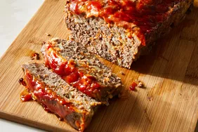

Meatloaf
This meatloaf recipe lives up to its name and is my favorite I have found. Try it and you will see.
Ingredients
- 2 large eggs
- ⅔ cup milk
- 2 teaspoons salt
- ¼ teaspoon ground black pepper
- 3 slices bread, crumbled
- 1 ½ pounds ground beef
- 1 onion, chopped
- 1 cup shredded Cheddar cheese
- ½ cup shredded carrot
- ¼ cup brown sugar
- ¼ cup ketchup
- 1 tablespoon prepared yellow mustard
Directions
- Gather all ingredients. Preheat the oven to 350 degrees F (175 degrees C).
- Whisk eggs, milk, salt, and ground black pepper in a large bowl. Add crumbled bread and stir until dissolved. Mix ground beef, onion, Cheddar cheese, and carrot into bread mixture; transfer mixture to a 9x5-inch loaf pan.
- Combine brown sugar, ketchup, and mustard in a small bowl; spread over the meat mixture.
- Bake in the preheated oven until no longer pink in the center, 60 to 75 minutes. An instant-read thermometer inserted into the center should read at least 160 degrees F (70 degrees C).